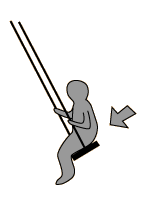

Ease of Excitation at Resonance
It is easy to get an object to vibrate at its resonant frequencies, hard
at other frequencies. A child's playground swing is an example of a pendulum, a resonant system with only one resonant frequency. With a tiny push on the swing each time it comes back to you, you can continue to build up the amplitude of swing. If you try to force it to swing a twice that frequency, you will find it very difficult, and might even lose teeth in the process!
| Swinging a child in a playground swing is an easy job because you are helped by its natural frequency. |  | But can you swing it at some other frequency? |
|
Index
Resonance concepts |